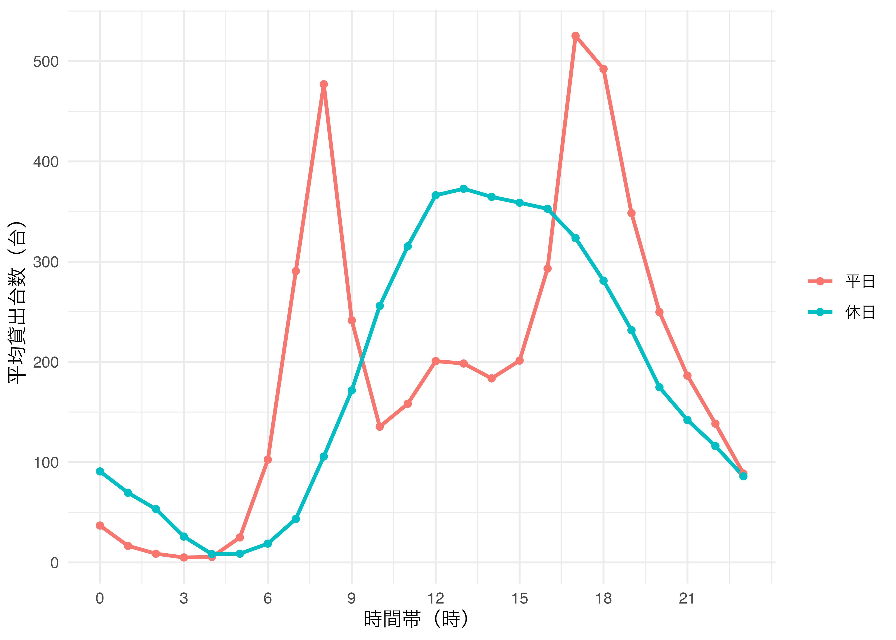
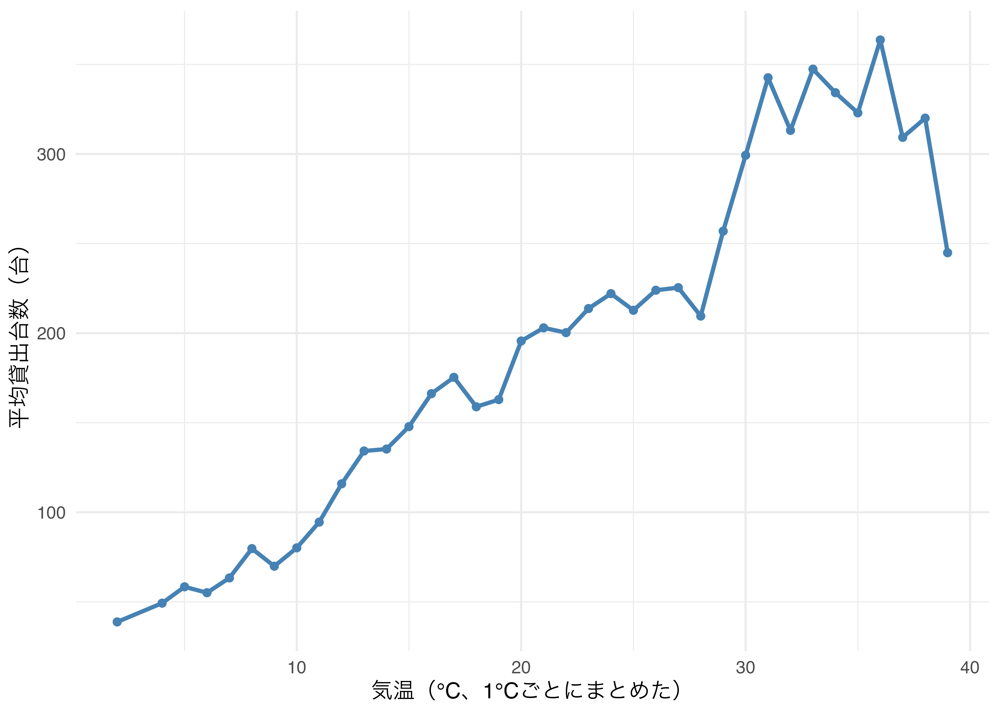
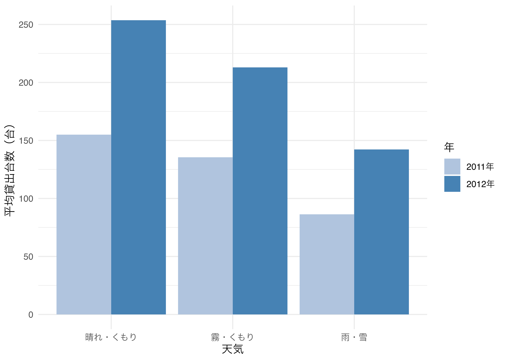
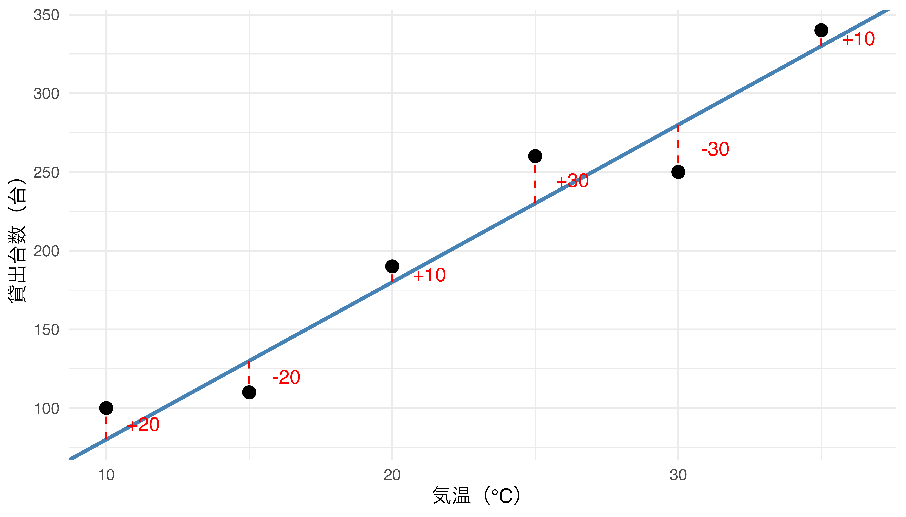
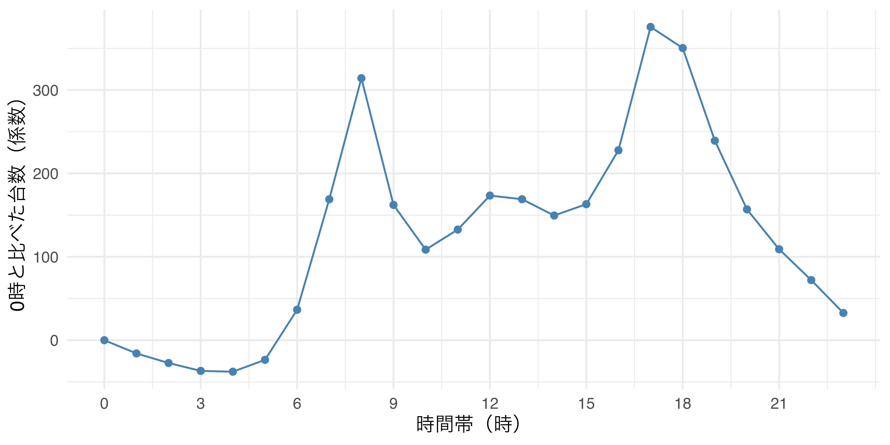
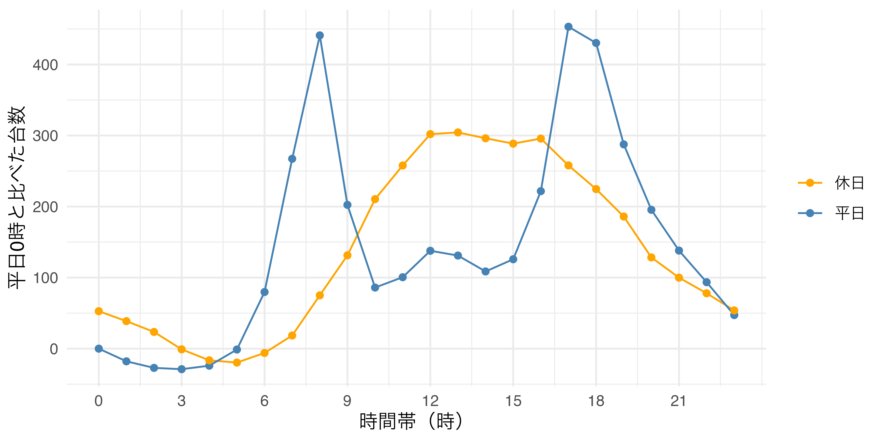
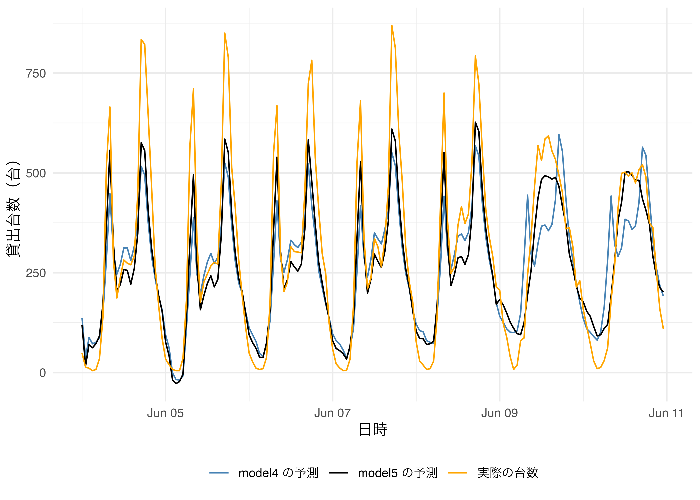

23 (10) 機械学習入門
予測モデルを作る
- 第10回から第13回の4回で学ぶ機械学習とは、以下のYoutubeで紹介されている内容です。データサイエンティストの仕事を体験します！！
シェアサイクルの貸出台数を予測する
今日の目標
- AI・機械学習・ディープラーニングの関係と、前期に学んだ回帰分析が機械学習の一つであることを理解する。
- データを「学習用」と「検証用」に分け、
predict()で予測し、RMSE で予測の当たり具合を測れるようになる。 - 変数や交差項を加えてモデルを育てる流れと、変数を増やしすぎたときに起こる過学習を体験する。
- 総合分析演習4（宿題）に、一人で同じ流れで取り組めるように準備する。
今日の位置づけ
ここからの4回は、回帰分析を「予測」に使う、機械学習の入門です。
| 回 | 内容 |
|---|---|
| 第10回（今日） | 教員と一緒に、シェアサイクルのデータで予測モデルを作る（デモンストレーション）。最後に総合分析演習4（宿題）を配布 |
| 第11回 | 総合分析演習4の内容を、一人ずつ説明する |
| 第12回 | 総合分析演習5：東京の中古マンションの価格を予測するコンペを開始 |
| 第13回 | コンペの順位発表と、一人ずつの説明 |
今日はコードを教員と一緒に1行ずつ実行していきます。今日の流れは、そのまま第11回〜第13回の課題で使います。
23.1 AI・機械学習・ディープラーニング
一言でいうと、機械学習はAI（人工知能）を実現するための重要な手法の一つです。
全体像としては、最も広い概念がAIであり、その中に機械学習が含まれ、さらにその中にディープラーニング（深層学習）が含まれるという、入れ子（階層）の構造になっています。
AI（人工知能）とは
人間のような知的な処理（推論、認識、判断、学習など）をコンピュータに実現させる技術・取り組み全般を指す、広い概念です。
- 機械学習以外のAIの例：人があらかじめ作成したルールや条件分岐（if-then ルール）に基づいて動くシステム、探索アルゴリズム、エキスパートシステムなど。
- すべてのAIがデータから自律的に学習するわけではなく、ルールベースで動くAIも存在します。
機械学習（Machine Learning）とは
膨大なデータからルールやパターンを統計・数理モデルによって自動的に学習し、未知のデータに対する予測や分類、判断を行えるようにするAIの手法です。
- 人間がすべての判断基準を手作業で書き込む代わりに、データとアルゴリズムを与えることで、モデルが規則性を抽出します。
- 主なアプローチとして、教師あり学習（回帰・分類）、教師なし学習（クラスタリング・次元削減）、強化学習などがあります。
ディープラーニング（深層学習）とは
機械学習の中でも、人間の神経回路網を模した多層のニューラルネットワークを用いる手法です。
- 従来の機械学習では人間が設計・選定していた「特徴量（データの重要な要素）」の抽出を、モデル自身が階層的に自動で行える点が大きな特徴です。
- 画像認識、音声認識、自然言語処理や、近年の生成AIなどの発展を牽引しています。
違いの比較
| 観点 | AI（人工知能） | 機械学習 | ディープラーニング |
|---|---|---|---|
| 位置づけ | 最も広い概念・目的 | AIを実現する手法の一つ | 機械学習の一種（多層NN） |
| ルールの作り方 | 人間による記述〜学習まで様々 | データから統計的に学習 | 多層ネットワークで特徴から学習 |
| 向いている領域 | 推論・判断・対話など全般 | 数値予測、分類、クラスタリングなど | 画像・音声・テキストなど非構造データ |
前期の回帰分析と機械学習
前期に学んだ回帰分析（lm()）は、データから係数を学習する、最も基本的な機械学習（教師あり学習の回帰）の一つです。使う道具は同じですが、目的が違います。
| これまで（統計的な分析） | これから（予測） | |
|---|---|---|
| 知りたいこと | \(X\) は \(Y\) に影響するか（説明） | まだ分からない \(Y\) はいくつか（予測） |
| 主に見るもの | 係数・p 値・R² | 新しいデータでの予測の外れ具合（RMSE） |
| 変数の選び方 | 問いと仮説に合わせて選ぶ | 予測がよく当たるように選ぶ |
| 良いモデルとは | 仮説を正しく検証できるモデル | まだ見ていないデータで、よく当たるモデル |
23.2 今日の依頼
今日から皆さんは、データ分析の会社で働くデータサイエンティストです。ワシントンD.C. のシェアサイクル Capital Bikeshare の運営チームから、次のような依頼が届きました。
依頼：1時間ごとの貸出台数を予測してほしい
Capital Bikeshare 運営チームより
私たちは毎日、トラックで自転車を運んで置き場の台数を調整したり（再配置）、整備スタッフのシフトを組んだりしています。自転車がよく借りられる時間に置き場が空っぽだと、利用者は借りられずに帰ってしまいます。反対に、借りられない時間に人を多く配置するのはむだです。
そこで、翌日の天気予報とカレンダー（平日か休日か）から、1時間ごとの貸出台数を予測する仕組みを作りたいと考えています。2011年と2012年の2年分のデータをお渡しするので、次の3点を報告してください。
- 1時間ごとの貸出台数は、どれくらい正確に予測できるか
- 予測には、何が効くか（天気、気温、時間帯、平日か休日か など）
- 予測を使うときに、気をつけること
この依頼は授業のために作った架空のものですが、シェアサイクルの会社が実際に取り組んでいる課題です。
23.3 データサイエンティストの仕事の流れ
| ステップ | すること | 今日の節 |
|---|---|---|
| 1 | データを読み込み、使える形に前処理する | Section 23.7 |
| 2 | グラフでデータを眺め、予測に効きそうなものを探す | Section 23.8 |
| 3 | データを「学習用」と「検証用」に分ける | Section 23.9 |
| 4 | 予測の良さ（RMSE と R²）の測り方と、基準（ベースライン）を決める | Section 23.10 |
| 5 | モデルを少しずつ育て、検証用の RMSE で比べる | Section 23.11 |
| 6 | 変数を増やしすぎるとどうなるか確かめる（過学習） | Section 23.12 |
| 7 | 最終モデルを決めて、依頼主に報告する | Section 23.13 |
23.4 今日の準備
| 1. | 新規 R プロジェクトを作成する。Directory name は「LessonB10」、場所は Kドライブの「R_programming」。 |
| 2. | Blackboard から bike_hour.csv と assignmentB10.qmd をダウンロードし、どちらも「LessonB10」フォルダの中（プロジェクトの直下）に入れる。 |
| 3. | RStudio で assignmentB10.qmd を開く。これが今日の Capital Bikeshare への報告書 になる。 |
| 4. | 講義資料のコードを、assignmentB10.qmd の同じ名前（label）の空のチャンクにコピーし、教員と一緒に上から順に1つずつ実行する。文章の「＿＿」と「（A ／ B）」は、結果を見て埋める。 |
| 5. | 最後に Render すると、依頼主への報告書（HTML）が完成する。 |
23.5 パッケージの準備
大学の PC はシャットダウンするたびに初期化されるため、毎回インストールが必要です。今日使うのは tidyverse だけです。
23.6 今日のデータ
Capital Bikeshare の2011年1月1日〜2012年12月31日の貸出記録を、1時間ごとに集計し、その時間の天気を加えたデータです。1行が1時間で、17,379 行あります。
出典：UCI Machine Learning Repository「Bike Sharing Dataset」（CC BY 4.0）。Fanaee-T, H. and Gama, J. (2013) “Event labeling combining ensemble detectors and background knowledge”, Progress in Artificial Intelligence, pp. 1–15.
| 変数名 | 内容 |
|---|---|
id |
行の番号 |
date |
日付 |
season_code |
季節の番号（1〜4）。今日は使わず、月から自分で季節を作り直す |
y2012 |
2012年なら 1、2011年なら 0（2012年のダミー変数） |
month |
月（1〜12） |
hour |
時間帯（0〜23時） |
holiday |
祝日なら 1 |
weekday |
曜日（0 = 日曜 〜 6 = 土曜） |
workday |
平日（土日・祝日でない日）なら 1、休日なら 0 |
weather |
天気の番号（1 = 晴れ・くもり、2 = 霧・くもり、3 = 小雨・小雪、4 = 大雨・大雪） |
temp |
気温（℃） |
feel_temp |
体感温度（℃） |
humidity |
湿度（%） |
wind |
風速 |
rentals_casual |
一時利用者の貸出台数 |
rentals_member |
会員の貸出台数 |
rentals |
貸出台数の合計（rentals_casual + rentals_member）。今日予測するもの |
予測に使ってはいけない変数
rentals_casual と rentals_member を足すと、予測したい rentals そのものになります。依頼主が予測したいのは「明日の貸出台数」なので、その時点ではまだ分からない値は予測に使えません。予測に使えるのは、予測する時点で分かっている情報（天気予報、日付、時間帯など）だけです。
23.7 ステップ1：読み込みと前処理
Rows: 17,379
Columns: 17
$ id <dbl> 1, 2, 3, 4, 5, 6, 7, 8, 9, 10, 11, 12, 13, 14, 15, 16, …
$ date <date> 2011-01-01, 2011-01-01, 2011-01-01, 2011-01-01, 2011-0…
$ season_code <dbl> 1, 1, 1, 1, 1, 1, 1, 1, 1, 1, 1, 1, 1, 1, 1, 1, 1, 1, 1…
$ y2012 <dbl> 0, 0, 0, 0, 0, 0, 0, 0, 0, 0, 0, 0, 0, 0, 0, 0, 0, 0, 0…
$ month <dbl> 1, 1, 1, 1, 1, 1, 1, 1, 1, 1, 1, 1, 1, 1, 1, 1, 1, 1, 1…
$ hour <dbl> 0, 1, 2, 3, 4, 5, 6, 7, 8, 9, 10, 11, 12, 13, 14, 15, 1…
$ holiday <dbl> 0, 0, 0, 0, 0, 0, 0, 0, 0, 0, 0, 0, 0, 0, 0, 0, 0, 0, 0…
$ weekday <dbl> 6, 6, 6, 6, 6, 6, 6, 6, 6, 6, 6, 6, 6, 6, 6, 6, 6, 6, 6…
$ workday <dbl> 0, 0, 0, 0, 0, 0, 0, 0, 0, 0, 0, 0, 0, 0, 0, 0, 0, 0, 0…
$ weather <dbl> 1, 1, 1, 1, 1, 2, 1, 1, 1, 1, 1, 1, 1, 2, 2, 2, 2, 2, 3…
$ temp <dbl> 9.84, 9.02, 9.02, 9.84, 9.84, 9.84, 9.02, 8.20, 9.84, 1…
$ feel_temp <dbl> 14.40, 13.64, 13.64, 14.40, 14.40, 12.88, 13.64, 12.88,…
$ humidity <dbl> 81, 80, 80, 75, 75, 75, 80, 86, 75, 76, 76, 81, 77, 72,…
$ wind <dbl> 0, 0, 0, 0, 0, 6, 0, 0, 0, 0, 17, 19, 19, 20, 19, 20, 2…
$ rentals_casual <dbl> 3, 8, 5, 3, 0, 0, 2, 1, 1, 8, 12, 26, 29, 47, 35, 40, 4…
$ rentals_member <dbl> 13, 32, 27, 10, 1, 1, 0, 2, 7, 6, 24, 30, 55, 47, 71, 7…
$ rentals <dbl> 16, 40, 32, 13, 1, 1, 2, 3, 8, 14, 36, 56, 84, 94, 106,…番号で入っている季節・天気・平日を、分かりやすい文字のラベルに直します。
df_bike <- df_raw |>
mutate(
season = case_when(month %in% 3:5 ~ "春",
month %in% 6:8 ~ "夏",
month %in% 9:11 ~ "秋",
.default = "冬"),
weather = case_when(weather == 1 ~ "晴れ・くもり",
weather == 2 ~ "霧・くもり",
.default = "雨・雪"),
day_type = if_else(workday == 1, "平日", "休日")
) |>
mutate(
season = factor(season, levels = c("春", "夏", "秋", "冬")),
weather = factor(weather, levels = c("晴れ・くもり", "霧・くもり", "雨・雪")),
day_type = factor(day_type, levels = c("平日", "休日"))
) |>
select(id, date, y2012, season, hour, day_type, weather,
temp, humidity, wind, rentals)
df_bike- 1
- 月から季節を作る（3〜5月を春、6〜8月を夏、9〜11月を秋、12〜2月を冬）。
- 2
- 天気の番号をラベルに置き換える。「大雨・大雪」（4）は2年間で3時間しかないので、「雨・雪」にまとめる。件数が少なすぎるカテゴリは、学習用データに1件も入らないことがあり、予測のときにエラーの原因になる。
- 3
- 平日なら「平日」、土日・祝日なら「休日」。
- 4
-
カテゴリの順番を決めておく（因子型、前期第11回）。
lm()では最初のカテゴリ（春・晴れ／くもり・平日）が基準になり、係数は「基準と比べて何台多いか少ないか」を表す。 - 5
-
予測に使う変数だけを残す（
rentals_casualとrentals_memberは使わない）。
# A tibble: 17,379 × 11
id date y2012 season hour day_type weather temp humidity wind
<dbl> <date> <dbl> <fct> <dbl> <fct> <fct> <dbl> <dbl> <dbl>
1 1 2011-01-01 0 冬 0 休日 晴れ・くもり…… 9.84 81 0
2 2 2011-01-01 0 冬 1 休日 晴れ・くもり…… 9.02 80 0
3 3 2011-01-01 0 冬 2 休日 晴れ・くもり…… 9.02 80 0
4 4 2011-01-01 0 冬 3 休日 晴れ・くもり…… 9.84 75 0
5 5 2011-01-01 0 冬 4 休日 晴れ・くもり…… 9.84 75 0
6 6 2011-01-01 0 冬 5 休日 霧・くもり 9.84 75 6
7 7 2011-01-01 0 冬 6 休日 晴れ・くもり…… 9.02 80 0
8 8 2011-01-01 0 冬 7 休日 晴れ・くもり…… 8.2 86 0
9 9 2011-01-01 0 冬 8 休日 晴れ・くもり…… 9.84 75 0
10 10 2011-01-01 0 冬 9 休日 晴れ・くもり…… 13.1 76 0
# ℹ 17,369 more rows
# ℹ 1 more variable: rentals <dbl>23.8 ステップ2：データを眺める
まずは、予測したい貸出台数がどのように変わるのかを、グラフで確かめます。
df_bike |>
group_by(hour, day_type) |>
summarise(mean_rentals = mean(rentals), .groups = "drop") |>
ggplot(aes(x = hour, y = mean_rentals, color = day_type)) +
geom_line(linewidth = 1) +
geom_point() +
scale_x_continuous(breaks = seq(0, 23, by = 3)) +
labs(x = "時間帯（時）", y = "平均貸出台数（台）", color = NULL) +
theme_minimal()
平日は朝8時ごろと夕方17〜18時ごろに大きな山があります。通勤・通学の時間です。休日は朝の山がなく、昼すぎにゆるやかな山があります。時間帯の影響の仕方が、平日と休日でまったく違うことが分かります。
df_bike |>
mutate(temp_round = round(temp)) |>
group_by(temp_round) |>
summarise(mean_rentals = mean(rentals), n = n()) |>
filter(n >= 20) |>
ggplot(aes(x = temp_round, y = mean_rentals)) +
geom_line(color = "steelblue", linewidth = 1) +
geom_point(color = "steelblue") +
labs(x = "気温（℃、1℃ごとにまとめた）", y = "平均貸出台数（台）") +
theme_minimal()
気温が高いほど借りられますが、増え方は一定ではなく、とても暑い時間（37℃以上）には減っています。まっすぐな直線ではなく、曲がった関係です。
df_bike |>
mutate(year = if_else(y2012 == 1, "2012年", "2011年")) |>
group_by(year, weather) |>
summarise(mean_rentals = mean(rentals), .groups = "drop") |>
ggplot(aes(x = weather, y = mean_rentals, fill = year)) +
geom_col(position = "dodge") +
scale_fill_manual(values = c("lightsteelblue", "steelblue")) +
labs(x = "天気", y = "平均貸出台数（台）", fill = "年") +
theme_minimal()
雨・雪の時間は大きく減ります。また、同じ天気でも、2012年は2011年よりずっと多く借りられています。サービスが知られて、利用者が増えたためと考えられます。
23.9 ステップ3：学習用と検証用に分ける
依頼主が知りたいのは、まだ起きていない時間の貸出台数です。手元のデータにぴったり当てはまるモデルでも、新しいデータで当たらなければ意味がありません。
そこで、データの 80% を「学習用」としてモデルを作るのに使い、残りの 20% を「検証用」として取っておきます。検証用データは、正解を知っているのに、知らないふりをして予測してみるためのデータです。
- 1
- 乱数の種を決める。同じ数字にすると、何度やっても同じ分け方になる。
- 2
- 80% の行をランダムに選んで「学習用」にする。
- 3
-
「学習用」に選ばれなかった残りの行（
idで照合）を「検証用」にする。
[1] 13903
[1] 347623.10 ステップ4：RMSE・R² とベースライン
RMSE
RMSE（Root Mean Squared Error、平方根平均二乗誤差）は、予測がどれくらい外れているかを表す数字です。
\[ \text{RMSE} = \sqrt{\frac{1}{n}\sum_{i=1}^{n}(\text{実際の値}_i - \text{予測値}_i)^2} \]
外れた大きさを2乗して平均し、最後に平方根をとって元の単位に戻します。今日なら単位は台で、「予測は平均的に〇〇台くらい外れている」と読みます。小さいほど良い予測です。
下の図は、6日分の架空のデータで RMSE の計算を表したものです。黒い点が実際の貸出台数、青い直線がモデルの予測、赤い点線が外れ（実際の値 − 予測値）です。

| 気温（℃） | 実際の値 | 予測値 | 外れ | 外れの2乗 |
|---|---|---|---|---|
| 10 | 100 | 80 | 20 | 400 |
| 15 | 110 | 130 | -20 | 400 |
| 20 | 190 | 180 | 10 | 100 |
| 25 | 260 | 230 | 30 | 900 |
| 30 | 250 | 280 | -30 | 900 |
| 35 | 340 | 330 | 10 | 100 |
| 計算の順番 | この例では |
|---|---|
| ① 外れを2乗する（プラスとマイナスが打ち消し合わないようにする） | 400, 400, 100, 900, 900, 100 |
| ② 2乗した外れを平均する | (400 + 400 + 100 + 900 + 900 + 100) ÷ 6 ≒ 466.7 |
| ③ 平方根をとって、元の単位（台）に戻す | \(\sqrt{466.7}\) ≒ 21.6 台 |
この予測は、平均的に約 22 台外れている、と読みます。外れをそのまま平均すると、+20 と −20 のように打ち消し合って 0 に近くなってしまうので、2乗してから平均します。
RMSE では「外れの向き」は分からない
RMSE は外れを2乗するので、多めに外しても（予測 ＞ 実際）、少なめに外しても（予測 ＜ 実際）、同じ「外れの大きさ」として数えます。多めと少なめのどちらに外しがちかは、RMSE からは分かりません。
向きを知りたいときは、外れ（実際の値 − 予測値）を2乗せずに、そのまま平均します（平均誤差）。
- プラス → 実際より少なめに予測しがち
- マイナス → 実際より多めに予測しがち
上の例では、外れの合計は +20 − 20 + 10 + 30 − 30 + 10 ＝ 20、平均誤差は約 +3.3 台で、ほとんど偏りはありません。
依頼主にとっては、外れの向きも大事です。たとえば、貸出台数を少なめに予測して自転車の配置が足りなければ、借りたい人が借りられず、利用者を逃してしまいます。多めに予測すれば、使われない自転車を運ぶ手間が無駄になります。どちらの外れが困るかは依頼主の事情によって違うので、報告では「どれくらい外れるか」（RMSE）に加えて、「どちらに外れがちか」も伝えると親切です（補足1で実際に確かめます）。
- 1
-
RMSE を計算する関数を自分で作る。
actualに実際の値、predに予測値を入れる。
R²（決定係数）
前期の回帰分析で学んだ R²（決定係数）も、予測の良さを表す数字として使えます。R² は「実際の値の散らばりのうち、何%を予測で説明できたか」を表します。
\[ R^2 = 1 - \frac{\sum(\text{実際の値}_i - \text{予測値}_i)^2}{\sum(\text{実際の値}_i - \text{実際の値の平均})^2} \]
分母は「平均で予測したときの外れの2乗の合計（もともとの散らばり）」、分子は「モデルで予測したときの外れの2乗の合計（説明できずに残った散らばり）」です。上の例では、実際の値の平均は約 208 台、分母は約 43,483、分子は 2,800 なので、R² ＝ 1 − 2,800 ÷ 43,483 ≒ 0.94。散らばりの約 94% を予測で説明できた、と読みます。1 に近いほど良い予測です。
- 1
-
R² を計算する関数。
summary(lm())に出てくる R² と同じ計算を、好きなデータで行えるようにする。
| RMSE | R² | |
|---|---|---|
| 読み方 | 平均的に〇〇台外れる | 散らばりの〇〇%を説明できた |
| 単位 | あり（今日は台） | なし（0〜1） |
| 良い予測 | 小さいほど良い | 1 に近いほど良い |
| 得意なこと | 依頼主に「どれくらい外れるか」を具体的に伝える | 単位の違う別のデータの予測とも比べられる |
今日は RMSE を主な指標にし、R² を並べて見ていきます。
R² は「検証用データ」で計算する
前期に summary() で見た R² は、モデルを作った学習用データでの値です。学習用の R² は、変数を増やすほど必ず大きくなるので、学習用の R² が高くても、新しいデータをよく予測できるとは限りません（ステップ6で確かめます）。予測の良さは、RMSE と同じく検証用データで計算した R² で判断します。検証用の R² は、平均で予測するより悪いときにはマイナスになることもあります。
ベースライン
モデルが役に立っているかを判断するには、比べる基準（ベースライン）が必要です。一番簡単な予測は、「天気も時間も気にせず、いつも学習用データの平均の台数だと予測する」ことです。
- 1
- 学習用データの平均の貸出台数。
- 2
- 検証用データのすべての時間を、この平均で予測したときの RMSE と R²。
[1] 189.9096
[1] 180.6807
[1] -0.0001526779平均だけで予測すると、平均的に約 181 台外れます。R² はほぼ 0 で、散らばりをまったく説明できていません。これより小さい RMSE（大きい R²）を目指します。
23.11 ステップ5：モデルを育てる
前期に学んだ lm() で、学習用データ（df_learn）からモデルを作ります。いきなり完成形を作るのではなく、次の手順を1つずつくり返して、モデルを少しずつ育てていきます。
| 順番 | すること |
|---|---|
| ① | モデルを学習用データで作る |
| ② | 係数を見て、モデルの中身を読む（どの変数で何台増える・減ると考えているか） |
| ③ | 学習用・検証用のそれぞれで予測し、RMSE と R² で当たり具合を確かめる |
| ④ | 結果を見て、「何が足りないか」を考え、次に試す変数を決める |
model1：気温だけ
まずは、ステップ2で貸出台数との関係が見えた気温だけで予測してみます。
model1 <- lm(rentals ~ temp, data = df_learn)
coef(model1)
pred1_learn <- predict(model1, newdata = df_learn)
pred1_valid <- predict(model1, newdata = df_valid)
rmse(df_learn$rentals, pred1_learn)
rmse(df_valid$rentals, pred1_valid)
r2(df_learn$rentals, pred1_learn)
r2(df_valid$rentals, pred1_valid)- 1
- 学習用データで、気温だけのモデルを作る。
- 2
-
predict()のnewdataにデータを渡すと、1行ずつの予測値が出てくる。学習用と検証用のそれぞれで予測する。 - 3
- 学習用と検証用のそれぞれで RMSE を計算する。
- 4
-
同じように R² を計算する。学習用の R² は
summary(model1)の「Multiple R-squared」と同じ値になる。
(Intercept) temp
-2.543318 9.429318
[1] 165.5961
[1] 166.9235
[1] 0.1681043
[1] 0.1463537気温が1℃高いと、貸出台数は約 9.4 台多いと予測するモデルです。検証用の RMSE は約 167 台で、平均だけの予測（約 181 台）より少し良くなりましたが、まだ大きく外れています。R² は約 0.15 で、散らばりの 15% ほどしか説明できていません。
毎回の計算を関数にまとめる
これからモデルを何回も作り、そのたびに「学習用と検証用で予測して RMSE と R² を計算する」ことをくり返します。同じコードを何度も書かなくてすむように、関数にまとめておきます。
check_model <- function(model, learn = df_learn) {
pred_learn <- predict(model, newdata = learn)
pred_valid <- predict(model, newdata = df_valid)
c(rmse_learn = rmse(learn$rentals, pred_learn),
rmse_valid = rmse(df_valid$rentals, pred_valid),
r2_learn = r2(learn$rentals, pred_learn),
r2_valid = r2(df_valid$rentals, pred_valid))
}
check_model(model1)- 1
-
learnはモデルを作ったデータ。何も指定しなければdf_learnになる（ステップ6で別のデータを指定する）。 - 2
- 学習用と検証用の RMSE、学習用と検証用の R² の4つを並べて返す。
- 3
- 上で計算した model1 の RMSE・R² と同じ値になることを確かめる。
rmse_learn rmse_valid r2_learn r2_valid
165.5960637 166.9235471 0.1681043 0.1463537 model2：気温の2乗を加える
ステップ2のグラフでは、気温と貸出台数の関係はまっすぐな直線ではなく、曲がっているように見えました。そこで、気温の2乗（I(temp^2)）を加えて、曲がった関係を表せるようにしてみます。
- 1
-
I(temp^2)は気温の2乗。I()で囲むと、^2を「2乗の計算」として扱う。
(Intercept) temp I(temp^2)
11.95711663 7.75437692 0.04110561
rmse_learn rmse_valid r2_learn r2_valid
165.5960637 166.9235471 0.1681043 0.1463537
rmse_learn rmse_valid r2_learn r2_valid
165.575092 166.919021 0.168315 0.146400 気温の2乗の係数は約 0.04 で、ほとんど 0 です。検証用の RMSE も、model1 が約 166.9 台、model2 が約 166.9 台、R² も約 0.146 と約 0.146 で、ほとんど変わりませんでした。
グラフで良さそうに見えても、効くとは限らない
グラフでは曲がって見えた関係も、気温の2乗を入れても予測はほとんど良くなりませんでした。予測に効くかどうかは、実際にモデルに入れて、検証用の RMSE で確かめるまでは分かりません。効かなかった変数は、モデルを複雑にするだけなので、これ以降は入れないことにします。
model3：天気・カレンダーを加える
気温だけでは足りないので、依頼主が「翌日の天気予報とカレンダー」から分かる情報をまとめて加えます。湿度・風速・天気・平日か休日か・年（2012年ダミー）・季節です。
(Intercept) temp humidity wind
78.6434997 11.8908902 -2.7065527 0.2912492
weather霧・くもり weather雨・雪 day_type休日 y2012
12.1064740 -4.2802680 -6.1466211 73.0043180
season夏 season秋 season冬
-66.9111462 37.4777380 19.8529011 rmse_learn rmse_valid r2_learn r2_valid
149.0351745 147.8157547 0.3261761 0.3306023 係数を読んでみましょう。
- 気温が1℃高いと約 11.9 台、湿度が1%高いと約 -2.7 台。
- 2012年は2011年より約 73 台多い（利用者が増えている）。
weather雨・雪は「晴れ・くもりと比べて」、season秋は「春と比べて」、day_type休日は「平日と比べて」何台多いか（マイナスなら少ないか）を表す。
検証用の RMSE は約 148 台、R² は約 0.33 になりました。model1 より良くなりましたが、まだ平均的に 148 台も外れています。
何が足りないか？ ステップ2の最初のグラフを思い出しましょう。貸出台数は、時間帯によって 0 台近くから 500 台近くまで大きく変わっていました。model3 には、時間帯がまだ入っていません。
model4：時間帯を加える
- 1
-
factor(hour)と書くと、0〜23 の数字を「24種類のカテゴリ」として扱い、0時を基準にした23個のダミー変数になる（前期第11回）。 - 2
-
係数の数を数える。時間帯のダミー変数だけで23個あるので、
coef()で全部を並べても読みにくい。
[1] 34
rmse_learn rmse_valid r2_learn r2_valid
102.9525911 104.5134201 0.6784538 0.6653531 係数が多いときは、表で眺めるよりグラフにすると読みやすくなります。時間帯の係数（0時と比べて何台多いか）だけを取り出して、折れ線グラフにします。
df_coef4 <- tibble(
hour = 0:23,
coef = c(0, coef(model4)[paste0("factor(hour)", 1:23)])
)
ggplot(df_coef4, aes(x = hour, y = coef)) +
geom_line(color = "steelblue") +
geom_point(color = "steelblue") +
scale_x_continuous(breaks = seq(0, 23, 3)) +
labs(x = "時間帯（時）", y = "0時と比べた台数（係数）") +
theme_minimal()- 1
-
factor(hour)1〜factor(hour)23という名前の係数を取り出す。基準の0時は係数がないので、0 を先頭に付ける。

8時と17〜18時に大きな山があります。ステップ2で見た平日の形にそっくりです。
もう1つ、係数の変化にも注目しましょう。weather雨・雪 の係数は、model3 では約 -4 台でしたが、model4 では約 -66 台になりました。雨は昼にも夜中にも降るので、時間帯を入れないと「雨の時間は少ない」のか「夜中だから少ない」のかが区別できず、雨の効果がうまく表せていなかったのです。
検証用の RMSE は約 105 台に大きく下がり、R² は約 0.67 に上がりました。散らばりの約 67% を説明できています。時間帯は、貸出台数にとても強く影響しています。
まだ足りないものは？ ステップ2のグラフでは、時間帯の山の形が平日と休日でまったく違いました（平日は朝夕、休日は昼）。ところが model4 では、時間帯のダミー変数の係数は平日も休日も同じです。つまり model4 は、「平日も休日も同じ形の山で、高さだけが違う」という予測しかできません。
model5：時間帯 × 平日・休日の交差項を加える
平日と休日で時間帯の効き方が違うことを表すには、前期第12回で学んだ交差項を使います。
- 1
-
factor(hour) * day_typeは、時間帯のダミー変数、平日・休日のダミー変数、その交差項をまとめて入れる書き方。
[1] 57
rmse_learn rmse_valid r2_learn r2_valid
79.2842410 80.0256409 0.8093035 0.8037991 検証用の RMSE は約 80 台まで下がり、R² は約 0.8 になりました。係数は 57 個に増えています。model4 と同じように、時間帯の係数をグラフにしてみます。今度は平日と休日で別々の線になります。
b_hour <- c(0, coef(model5)[paste0("factor(hour)", 1:23)])
b_inter <- c(0, coef(model5)[paste0("factor(hour)", 1:23, ":day_type休日")])
df_coef5 <- tibble(
hour = 0:23,
平日 = b_hour,
休日 = b_hour + coef(model5)["day_type休日"] + b_inter
) |>
pivot_longer(c(平日, 休日), names_to = "day_type", values_to = "coef")
ggplot(df_coef5, aes(x = hour, y = coef, color = day_type)) +
geom_line() +
geom_point() +
scale_x_continuous(breaks = seq(0, 23, 3)) +
scale_color_manual(values = c("平日" = "steelblue", "休日" = "orange")) +
labs(x = "時間帯（時）", y = "平日0時と比べた台数", color = NULL) +
theme_minimal()- 1
- 平日の時間帯の効果（基準の平日0時と比べて何台多いか）。
- 2
- 交差項の係数（休日のときに、その時間帯の効果がどれだけ変わるか）。
- 3
- 休日の効果 ＝ 時間帯の係数 ＋ 休日の係数 ＋ 交差項の係数。前期第12回の「グループ別の傾き」と同じ考え方。

平日は朝夕の2つの山、休日は昼すぎの1つの山になりました。交差項を入れたことで、モデルが平日と休日の違いを係数として覚えたことが分かります。
予測では、係数を1つずつ説明しなくてもよい？
前期の回帰分析では、「この係数が統計的に有意か」「1増えると何増えるか」を1つずつ読むことが目的でした。予測では、目的はよく当てることなので、70個近い係数を1つずつ説明できなくても、検証用の RMSE が小さければ良いモデルです。それでも、係数をグラフにして「モデルがデータの特徴をつかんでいるか」を確かめておくと、おかしな予測に早く気づけますし、依頼主にも説明しやすくなります。
ここまでの結果をまとめる
df_result <- tibble(
model = c("ベースライン（平均だけ）", "model1 気温", "model2 ＋気温の2乗",
"model3 気温＋天気・カレンダー", "model4 ＋時間帯", "model5 ＋時間帯×平日・休日"),
rmse_valid = c(rmse(df_valid$rentals, mean_learn),
res1["rmse_valid"], res2["rmse_valid"], res3["rmse_valid"],
res4["rmse_valid"], res5["rmse_valid"]),
r2_valid = c(r2(df_valid$rentals, mean_learn),
res1["r2_valid"], res2["r2_valid"], res3["r2_valid"],
res4["r2_valid"], res5["r2_valid"])
)
df_result |>
mutate(rmse_valid = round(rmse_valid, 1),
r2_valid = round(r2_valid, 3))# A tibble: 6 × 3
model rmse_valid r2_valid
<chr> <dbl> <dbl>
1 ベースライン（平均だけ） 181. 0
2 model1 気温 167. 0.146
3 model2 ＋気温の2乗 167. 0.146
4 model3 気温＋天気・カレンダー 148. 0.331
5 model4 ＋時間帯 104. 0.665
6 model5 ＋時間帯×平日・休日 80 0.804予測が大きく良くなったのは、ステップ2のグラフで見つけた時間帯（model4）と、平日と休日の違い（model5）を入れたときでした。データを眺めて気づいたことをモデルに入れ、検証用の RMSE で確かめる。このくり返しが、予測モデルづくりの基本です。
予測をグラフで確かめる
2012年6月の1週間（月曜〜日曜）について、実際の貸出台数と、model4・model5 の予測を並べて描きます。
df_bike |>
filter(date >= as.Date("2012-06-04"), date <= as.Date("2012-06-10")) |>
mutate(datetime = make_datetime(year(date), month(date), day(date), hour),
`model4 の予測` = predict(model4, newdata = pick(everything())),
`model5 の予測` = predict(model5, newdata = pick(everything())),
`実際の台数` = rentals) |>
pivot_longer(c(`実際の台数`, `model4 の予測`, `model5 の予測`),
names_to = "type", values_to = "count") |>
ggplot(aes(x = datetime, y = count, color = type)) +
geom_line() +
scale_color_manual(values = c("実際の台数" = "orange", "model4 の予測" = "steelblue",
"model5 の予測" = "black")) +
labs(x = "日時", y = "貸出台数（台）", color = NULL) +
theme_minimal() +
theme(legend.position = "bottom")- 1
- 日付と時間帯から、日時を作る。
- 2
-
pick(everything())は「今のデータのすべての列」という意味で、そのデータで予測する。 - 3
-
実際の台数と2つの予測を、1つの列（
count）にまとめ、どれの値かをtype列に入れる。こうすると、color = typeで3本の線を色分けして描ける。

model4（青）は、休日（9日・10日）にも朝と夕方の山を予測してしまっています。model5（黒）は、平日は朝夕の2つの山、休日は昼の山と、実際の形（オレンジ）にかなり近い予測ができています。
23.12 ステップ6：過学習を体験する
交差項でこれだけ良くなるなら、もっとたくさん交差項を入れれば、もっと良くなるのでしょうか。時間帯 × 平日・休日 × 天気 × 季節 の交差項をすべて入れた、とても複雑なモデル（model6）を作ってみます。
さらに、「データが少ないとき」に何が起きるかを見るため、学習用データから 1,000 時間分だけを取り出したデータでも、model5 と model6 を作って比べます。
set.seed(1)
df_small <- df_learn |> slice_sample(n = 1000)
model6 <- lm(rentals ~ temp + humidity + wind + y2012 +
factor(hour) * day_type * weather * season, data = df_learn)
model5_small <- lm(rentals ~ temp + humidity + wind + weather +
y2012 + season + factor(hour) * day_type, data = df_small)
model6_small <- lm(rentals ~ temp + humidity + wind + y2012 +
factor(hour) * day_type * weather * season, data = df_small)
length(coef(model5))
length(coef(model6))
df_overfit <- rbind(check_model(model5),
check_model(model6),
check_model(model5_small, learn = df_small),
check_model(model6_small, learn = df_small)) |>
as_tibble() |>
mutate(data = c("学習用（全部）", "学習用（全部）", "1,000時間分だけ", "1,000時間分だけ"),
model = c("model5", "model6", "model5", "model6"),
.before = 1)
df_overfit |>
mutate(across(starts_with("rmse"), \(x) round(x, 1)),
across(starts_with("r2"), \(x) round(x, 3)))- 1
- 学習用データから、1,000 行だけをランダムに取り出す。
- 2
-
a * b * c * dと書くと、4つの変数のすべての組み合わせの交差項が入る。時間帯24 × 平日・休日2 × 天気3 × 季節4 ＝ 576 通りの組み合わせごとに、別々の台数を予測するモデルになる。 - 3
- 同じ2つのモデルを、1,000 時間分のデータだけで作る。
- 4
- 係数の数を比べる。model6 は係数が 580 個もある。
- 5
-
4つのモデルの RMSE と R² を
check_model()で計算し、rbind()で縦に並べて表にする。1,000 時間分のモデルは、学習用の値をdf_smallで計算する（learn = df_small）。
[1] 57
[1] 580
# A tibble: 4 × 6
data model rmse_learn rmse_valid r2_learn r2_valid
<chr> <chr> <dbl> <dbl> <dbl> <dbl>
1 学習用（全部） model5 79.3 80 0.809 0.804
2 学習用（全部） model6 68.4 70.4 0.858 0.848
3 1,000時間分だけ model5 79.7 84.1 0.797 0.783
4 1,000時間分だけ model6 55 107. 0.903 0.652- 学習用データを全部（約 13,903 時間分）使うと、model6 の検証用 RMSE（約 70 台）は model5（約 80 台）より小さくなります。データが十分にあれば、複雑なモデルも役に立ちます。
- ところが、1,000 時間分しかないと、model6 は学習用の RMSE はとても小さい（約 55 台）のに、検証用の RMSE は大きくなります（約 107 台）。model5 の検証用 RMSE（約 84 台）より悪くなってしまいました。
- R² で見ても同じです。1,000 時間分の model6 は、学習用の R² が約 0.9 と model5（約 0.8）より高いのに、検証用の R² は約 0.65 と model5（約 0.78）より低くなります。前期のように学習用の R² だけを見ていると、model6 のほうが良いモデルだと思い込んでしまいます。
過学習
変数や交差項をたくさん入れると、モデルは学習用データの細かいでこぼこ（たまたまの誤差）まで覚えてしまい、新しいデータでは予測が悪くなることがあります。これを過学習（overfitting）といいます。
- 学習用の RMSE は、変数を増やすほど必ず小さくなります。だから、モデルの良し悪しは学習用ではなく検証用の RMSEで判断します。
- 学習用と検証用の RMSE の差が大きいときは、過学習を疑います。
- どこまで複雑なモデルを使えるかは、データの量によって変わります。
係数が NA になる
model6_small の係数を coef() で見ると、NA がたくさん出てきます。1,000 時間分のデータには、「休日 × 雨・雪 × 冬 × 3時」のように、1件もない組み合わせがあり、その係数は計算できないためです。これも「データに対して変数が多すぎる」というサインです（このチャンクでは警告を表示しないようにしています）。
23.13 ステップ7：最終モデルと報告
検証用の RMSE が一番小さかったモデルを、学習用と検証用を合わせたデータ全体（df_bike）で作り直し、最終モデルにします。検証用データは「モデルを選ぶ」ために取っておいたものなので、選び終わったら学習に使ってかまいません。データが多いほど、予測は安定します。
df_result_all <- bind_rows(
df_result,
tibble(model = "model6 ＋すべての交差項",
rmse_valid = df_overfit$rmse_valid[2], r2_valid = df_overfit$r2_valid[2])
) |>
arrange(rmse_valid)
df_result_all |>
mutate(rmse_valid = round(rmse_valid, 1),
r2_valid = round(r2_valid, 3))
model_final <- lm(rentals ~ temp + humidity + wind + y2012 +
factor(hour) * day_type * weather * season, data = df_bike)- 1
- 検証用 RMSE の小さい順に並べる。
- 2
- 一番小さかったモデル（ここでは model6）を、データ全体で作り直す。
# A tibble: 7 × 3
model rmse_valid r2_valid
<chr> <dbl> <dbl>
1 model6 ＋すべての交差項 70.4 0.848
2 model5 ＋時間帯×平日・休日 80 0.804
3 model4 ＋時間帯 104. 0.665
4 model3 気温＋天気・カレンダー 148. 0.331
5 model2 ＋気温の2乗 167. 0.146
6 model1 気温 167. 0.146
7 ベースライン（平均だけ） 181. 0 依頼主への報告
Capital Bikeshare 運営チームへの報告（例）
- どれくらい正確に予測できるか：天気・カレンダー・時間帯を使ったモデルで、1時間ごとの貸出台数を、平均的に約 70 台の外れで予測できました（貸出台数の散らばりの約 85% を説明）。何も使わずに平均で予測した場合（約 181 台の外れ）より、大きく改善しています。
- 何が効くか：最も効いたのは時間帯と、その平日・休日による違いです。平日は朝8時ごろと夕方17〜18時ごろに通勤の利用が集中し、休日は昼すぎに利用が多くなります。気温（とても暑い時間を除き、高いほど多い）、雨・雪、年（利用者の増加）も効いています。
- 気をつけること：
- 利用者は年々増えています。2011年と2012年のデータで作ったモデルは、2013年以降の台数を少なめに予測してしまうおそれがあります。少なめの予測で配置すると自転車が足りなくなるので、新しいデータで作り直し続ける必要があります（下の補足1）。
- 予測に使う天気は「天気予報」なので、予報が外れれば、台数の予測も外れます。
- イベントやハリケーンなど、データにない出来事は予測できません。
- 夜中などの利用が少ない時間には、マイナスの台数を予測してしまうことがあります（下の補足）。
今日は 80% と 20% をランダムに分けたので、検証用データには2011年の時間も2012年の時間も入っていました。しかし、依頼主が本当に予測したいのは「未来」です。そこで、2011年だけでモデルを作り、2012年を予測してみます（2011年のデータしかないので、y2012 は使えません）。
[1] 138.7874[1] 234.6664[1] 148.8801[1] 85.78628RMSE は約 139 台と、ランダムに分けたときよりずっと大きくなります。2012年の実際の平均（約 235 台）に対して、予測の平均は約 149 台で、利用者の増加を予測できず、全体に少なめに予測しています。平均誤差は約 +86 台で、1時間あたり平均してそれだけ少なく見積もっていることになります。このまま使うと、自転車の配置がいつも足りなくなるおそれがあります。RMSE だけでは分からない「外れの向き」が、ここではとても重要です。過去のデータで作ったモデルは、世の中が変わると当たらなくなります。
23.14 総合分析演習4（宿題）
今日の流れを、別のデータで一人で行ってもらいます。今度は、アメリカ・アイオワ州エイムズ市の不動産会社から、「売り出す住宅の価格の目安を予測してほしい」という依頼が届きました。データ（ames_house.csv）と課題ファイル（assignmentB11.qmd）は Blackboard で配布します。
- データ：エイムズ市で2006〜2010年に売れた住宅 2,909 件の販売価格と、広さ・建築年・地区・設備など。
- 課題ファイルの課題1〜9に沿って、今日と同じ流れ（前処理 → グラフ → 学習用と検証用に分ける → モデルを1つずつ育てる → 依頼主への報告）で取り組む。
- ベースラインを含めて3つ以上のモデルを作り、検証用の RMSE と R² で比べて、一番良いモデルを選ぶ。どの変数を使うかは自分で考える。
- 提出：Render した HTML を ZIP 形式に圧縮して Blackboard から提出。期限は第11回の授業開始（12月14日 15:45）まで。
- 第11回に、レポートを画面に映しながら、一人ずつ内容を説明する。
23.15 まとめ
| 項目 | ポイント |
|---|---|
| AI・機械学習 | AI ⊃ 機械学習 ⊃ ディープラーニング。前期の回帰分析（lm()）も機械学習の一つ |
| 説明と予測 | 同じ lm() でも、予測では「新しいデータで当たるか」を見る |
| 学習用と検証用 | データを分け、学習用でモデルを作り、検証用で当たり具合を確かめる |
predict() |
predict(モデル, newdata = データ) で、1行ずつの予測値を出す |
| RMSE | 予測が平均的にどれくらい外れているか。元の単位で読み、小さいほど良い |
| R²（検証用） | 実際の値の散らばりの何%を予測で説明できたか。1 に近いほど良い。学習用の R² は変数を増やすと必ず上がるので、検証用で見る |
| 平均誤差 | 外れ（実際 − 予測）をそのまま平均したもの。RMSE では分からない「外れの向き」が分かる。プラスなら少なめ、マイナスなら多めに予測しがち |
| ベースライン | 比べる基準。まずは「平均だけで予測」 |
| 交差項 | 「時間帯の効き方が平日と休日で違う」のような関係を表し、予測を大きく良くすることがある |
| 過学習 | 変数を増やすと学習用には当てはまるが、新しいデータでは悪くなることがある。データが少ないほど起こりやすい |
| 予測に使える変数 | 予測する時点で分かっている情報だけ。答えそのもの（rentals_casual + rentals_member）は使えない |
次回の予告
次回は発表・分析結果説明4です。
- 総合分析演習4のレポートを画面に映しながら、一人ずつ教員に説明してもらいます
- 「なぜ学習用と検証用に分けたのか」「RMSE が〇〇とはどういう意味か」「どのモデルを選んだか、なぜか」と質問するので、答えられるように準備してきてください
- 説明の順番を待つ間に、総合分析演習5（コンペ）のデータを配布するので、データを眺めるところから始めましょう